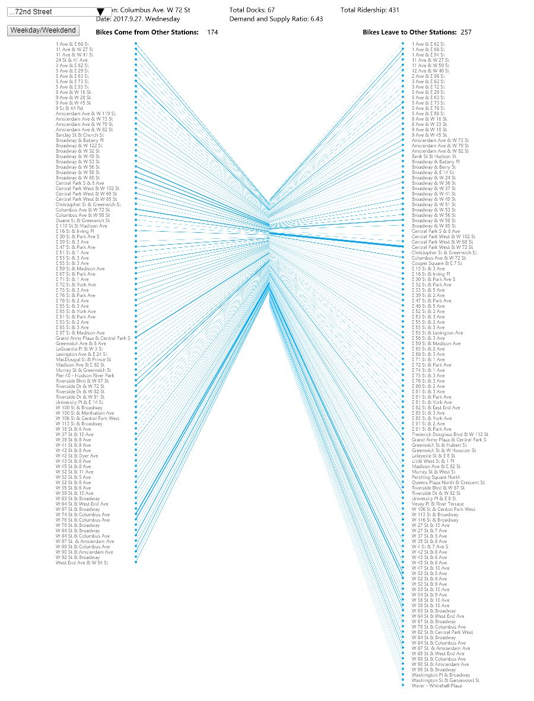
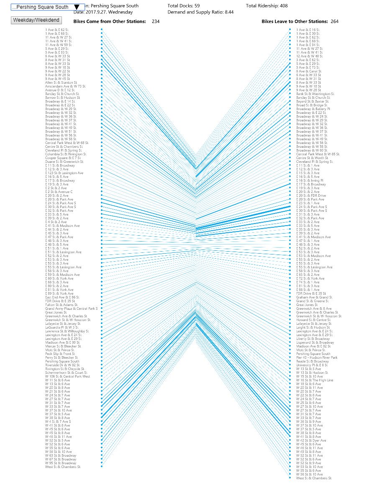
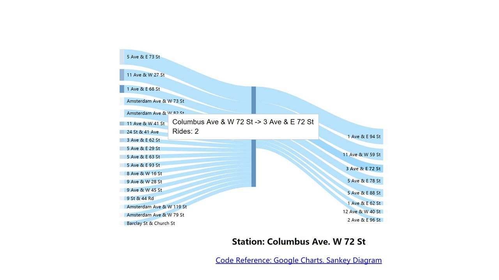
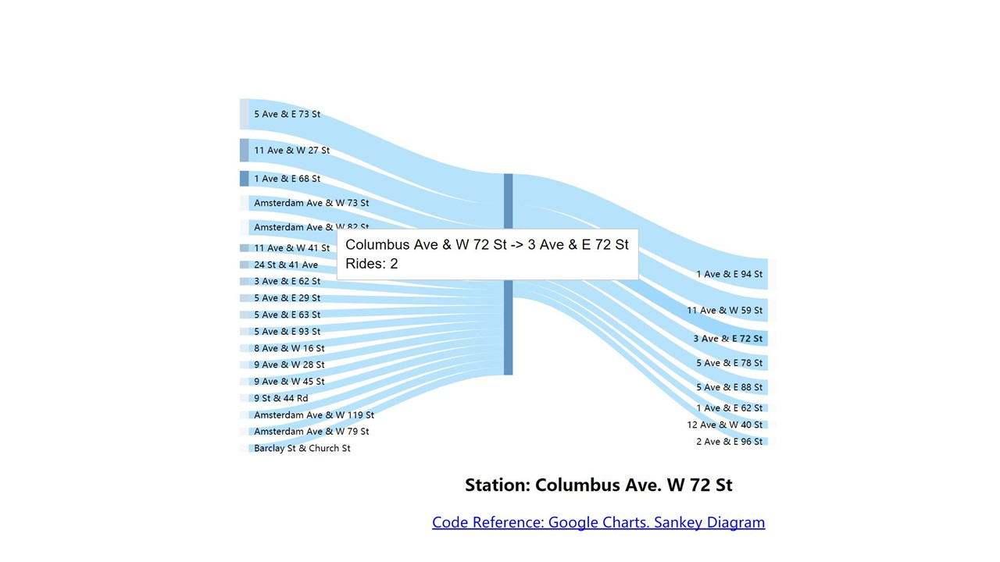

Click to next page to explore more and have fun with the visualization for selected CitiBike stations!
BACKGROUND
- The expansion of Citibike stations in summer, 2017.
- The challenge of rebalancing Citibikes
- High demand in rush hour and summer
- Past personal research: relationship between Citibike ridership and neighborhood demographics based on cencus tracts
PRELIMITARY IDEAS
- Visualize the ridership change in a day.
- Where do bikes come and go? Which is the popular station?
- What is the supply and demand of each CitiBike station?
DATA EXPLORATION
I used the CitiBike trip history data on Sep. 27 and Oct. 7, 2017. There are Over 30,000 rows of data for one days. To further explore the data and find more interesting point, I made several sketches by using the one-day data of one station. However, there are already many project and research that focus on the CitiBike ridership visualization, whether by tracing and mapping the routes of all the rides, or by analyzing the ridership characteristics in different time and weather conditions.
VISUALIZATION DESIGN
Here, I want to find some visualization other than maps to display both supply and demand at the CitiBike stations. I abandon part of the first idea as the time change is already generally accepted by people, and keep the idea of demand and supply ratio.
Finally, I decided to use the design idea of Sankey chart. The logic of Sankey chart is to show a flowchart for the upstream and downstream connections between different elements. There are no repeated elements on both sides. I wanted to draw different lines that start from the different station and end at selected station A to show the bikes that comes to station A. Then, draw another set of shapes from station A and end at different end stations to show the bikes that leave from station A. The width of the shape represents the number of rides (the visualization ignores the rides less than one trip). Meanwhile, the blue rectangle in the center represent the total docks at this station.
Sketches:
 

PROCESS
As the dataset for CitiBike is too large, I decided to select several stations and use their one-day ridership data. One station is Columbus Ave. 72th St., which is located right next to the entrance of Central Park and has the largest number of total docks. Cathedral Pkwy station is the new station near Columbia University. They are all in residential neighborhoods in Uptown. Second group of stations in Midtown are 8th Ave. 31st St., which is a popular site for tourists, and Pershing Square South, which is located near Grand Central. Third groups of stations are Fulton St. Broadway in financial center in Downtown, and Lafayette St. E 8th St. near Washington Square. I try to use these stations as representatives of typical locations in NYC. The output can show the ridership patterns in either residential area, commercial and tourism area, or office area.
Project Development Process:
FINDINGS
1. The visualization shows different pattern of ridership either in Uptown, Midtown, and Downtown. It displays the difference between supply and demand of CitiBike at one station. Meanwhile, it indicates the mobility of selected station, which means that the relationship of inflex and outflux of bikes. For example, although the 8th AV. 31st station in Midtown has very few supply of bike and docks, thousands of people end their tirps there and provide enough bike supply. Its mobility is much higher than other stations.
2. We can also compare the differences between weekdays and weekends. For example, stations at Fulton street and Pershing Square has less ridership on weekends. This indicates that most users may ride CitiBike for transit to work at these stations. While in residential neighborhoods in Uptown, the uses of bikes are more static, and the related stations are also near themselves.
FUTURE DIRECTION
- More stations could be used as input to further compare the different patterns.
- It may be possible to add curves to each line for better visualization.
- Map could till be supplimentary visualization for the findings to figure out where is the stations with highest ridership.